Hawaii VINE Project-Network Resilience and System Stability

 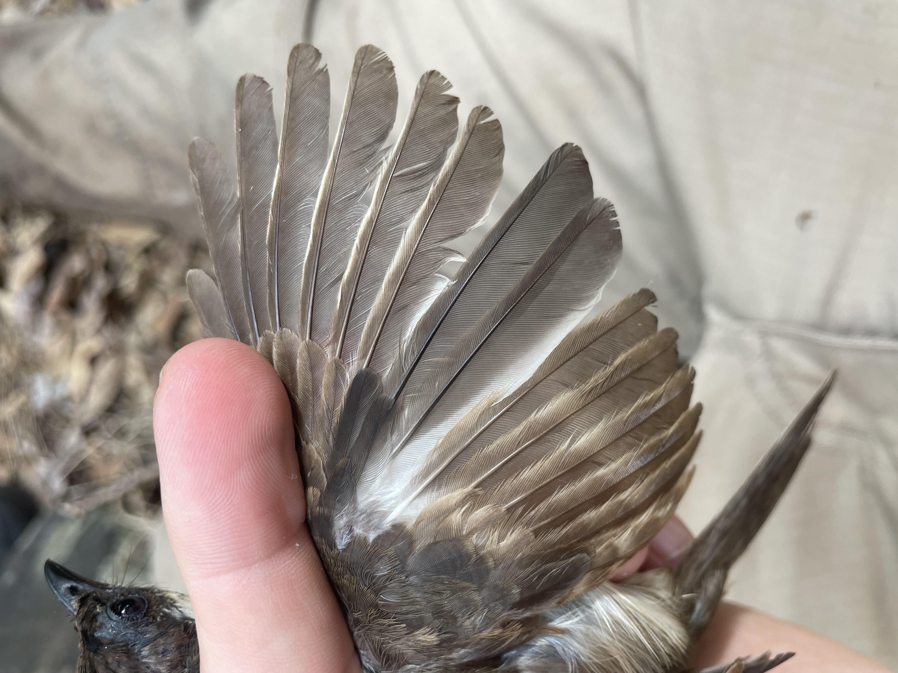
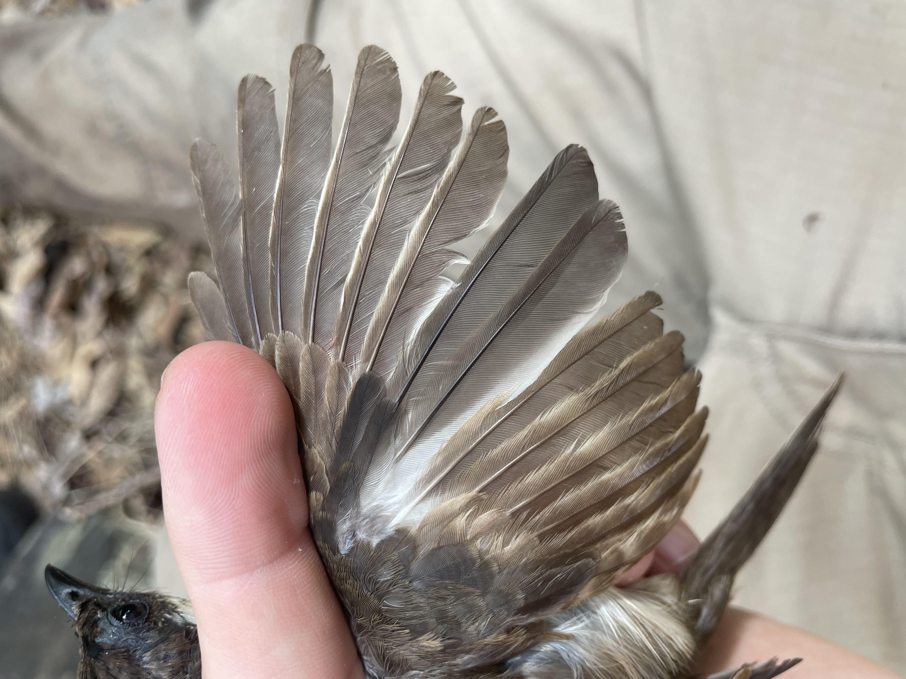


Using multiple sites across the island of Oahu, the Hawaii VINE (Vertebrate Introductions and Novel Ecosystems) Project examines how the structure and dynamics of seed dispersal networks vary across ecological contexts. This phase of the project is manipulating fruit resources in a novel ecosystem to understand the mechanisms of community stability, resilience and recovery. Across three sites in the Wai'anae Mountain Range our team is collecting data on the avian frugivore network through avian banding, fecal and blood sample collectiongs, fruit sampling, and vegetation sampling.
I acknowledge that Hawaiʻi is an indigenous space where the descendants of the original people are today identified as Kānaka Maoli (Native Hawaiian). I recognize that it was through coercion, force, and the breaking of formal treaties that this land was illegally seized. I recognize my privelege to work on the mokupuni (island) of Oʻahu, in the Pae ʻĀina o Hawaiʻi (Hawaiian archipelago) and express sincere gratitude for the opportunity to learn from generations of Aboriginal Hawaiians and their knowledge systems that have shaped and continue to shape Hawaiʻi in a sustainable way that allows us to learn here today.
Collaborators: Garrett Higgins, Dr. Patrick Kelley, Dr. Corey Tarwater (University of Wyoming)
Liz Howard, Dr. Jinelle Sperry (University of Chicago - Champaigne)
Dr. Don Drake (University of Hawai'i - Manoa)
Dr. Jeff Foster (Northern Arizona University)
Mechanisms of Successful Seed Dispersal


Seed dispersal is a critical mutualistic relationship that drives system stability, biodiversity, and regeneration post-disturbance. My Ph.D. work focuses on the mechanisms that drive successful seed dispersal on O'ahu, Hawai'i. The seed dispersal network on O'ahu is novel in which the fruiting plant species and non-native frugivores did not evolve together, which provides a ripe opportunity to test what mechanisms drive successful dispersal. I am actively conducting field work to answer the following questions:
(1) How do birds find fruit? Testing the mechanisms of the spatiotemporal overlap between available fruit and avian frugivores.
(2) Competitive Eavesdropping: Are frugivorous competitors cueing into the soundscape to increase frugivory success?
(3) Estimating maximum seed dispersal distances
(4) How do abiotic factors and scarification influence germinability, seedling growth rates, and seedling survival in a dispersal dependent system? Projections under future climate scenarios.
(5) How effective are seed dispersers? Using empirical data to measure Seed Dispersal Effectiveness for a Hawaiian seed dispersal network.
I acknowledge that Hawaiʻi is an indigenous space where the descendants of the original people are today identified as Kānaka Maoli (Native Hawaiian). I recognize that it was through coercion, force, and the breaking of formal treaties that this land was illegally seized. I recognize my privelege to work on the mokupuni (island) of Oʻahu, in the Pae ʻĀina o Hawaiʻi (Hawaiian archipelago) and express sincere gratitude for the opportunity to learn from generations of Aboriginal Hawaiians and their knowledge systems that have shaped and continue to shape Hawaiʻi in a sustainable way that allows us to learn here today.
Collaborators: Garrett Higgins, Dr. Patrick Kelley (University of Wyoming)
State of the Florida Scrub-Jay
 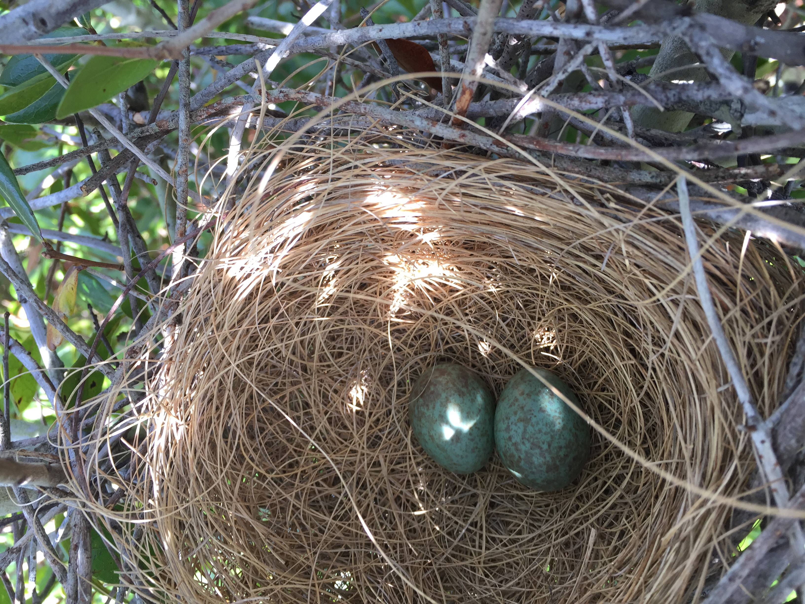
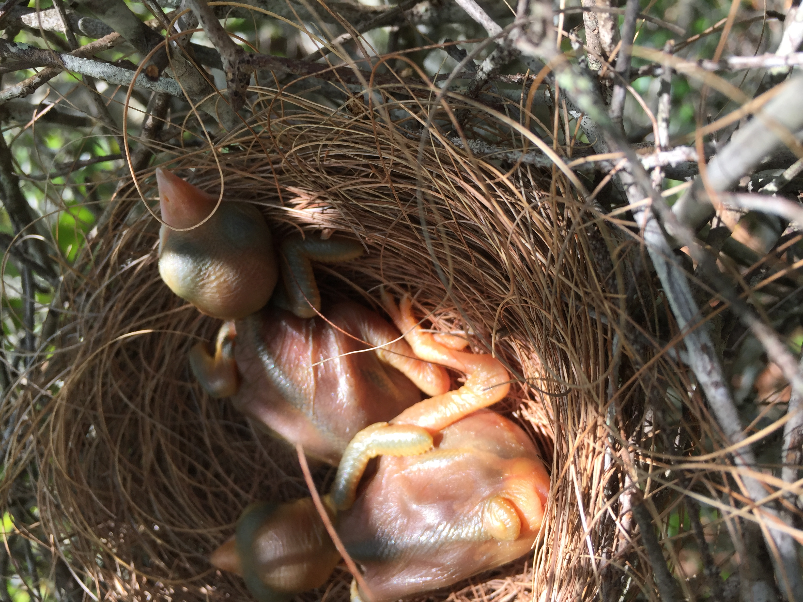
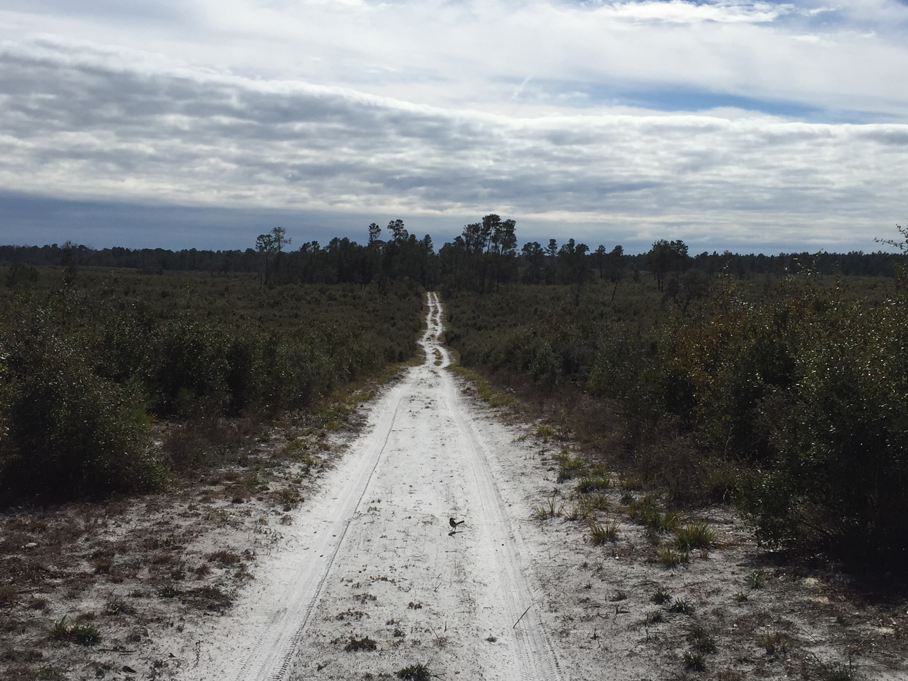
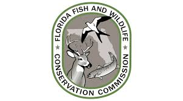
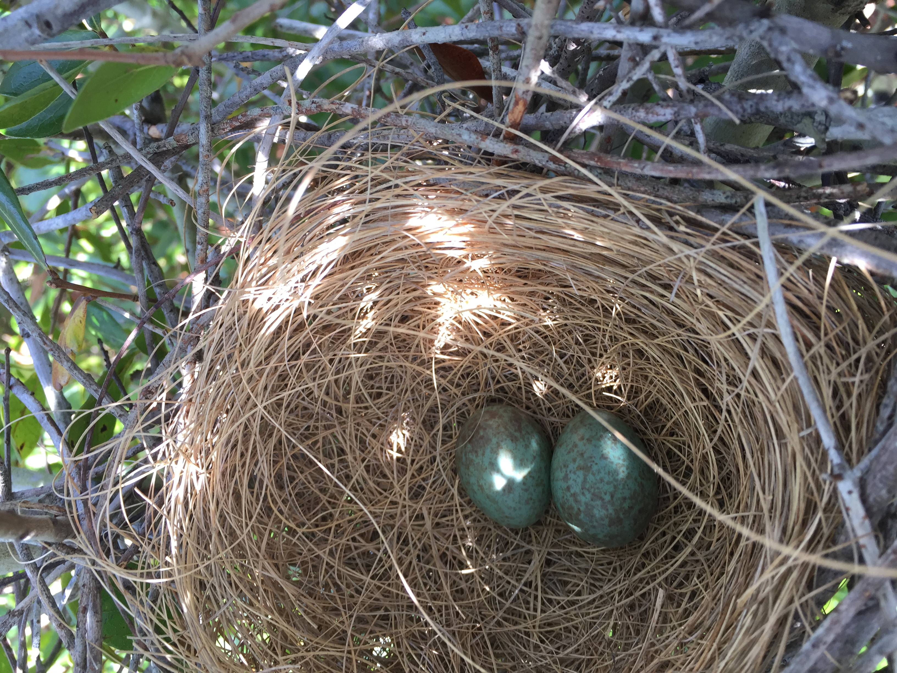
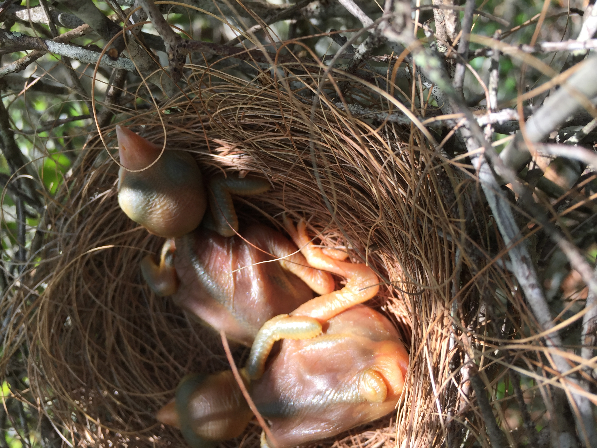
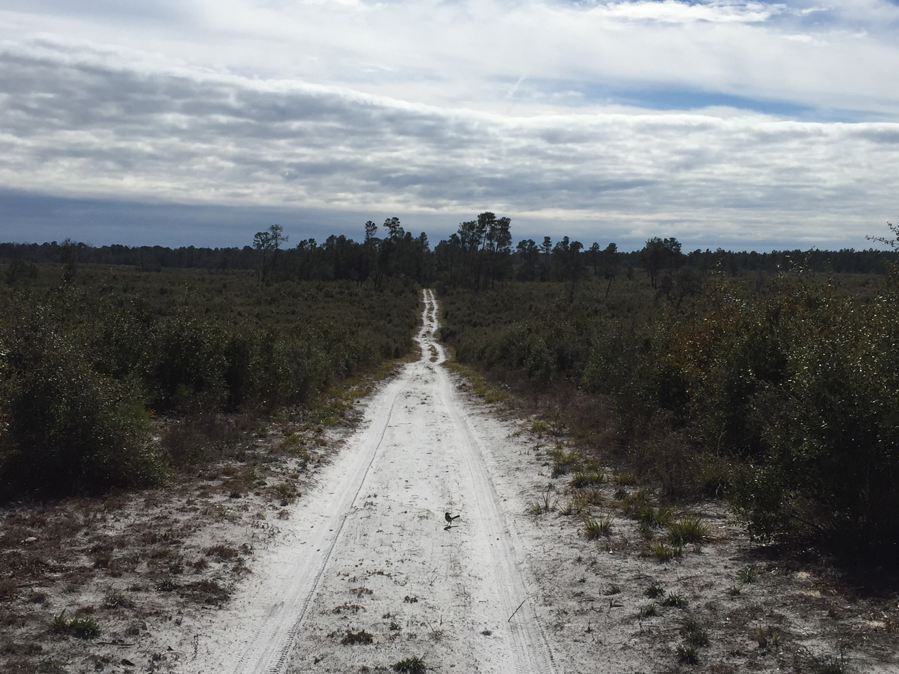
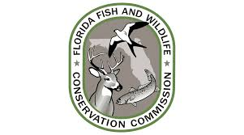
The Florida scrub-jay is a federally threatened, Florida scrub endemic, cooperatively breeding species in peninsular Florida. In an increasingly fragmented landscape, geographically distinct metapopulations have formed, in which demographic trends are distinct. For over a year we collected updated demographic data of the state-wide Florida scrub-jay population across all publicly managed lands in the state. From this data we will compare with previous state-wide and metapopulation trends and compare the relative importance of habitat configuration, dispersal distances, and adjacent landcover types on population stability and resiliency. Our objectives are to [1] Conduct a state wide population status assessment on publicly managed lands, [2] assess the landscape covariates that can influence site specific and metapopulation demographic trends.
Collaborators: Dr. Karl Miller, Dr. Colin Shea, and Dr. Mark Barrett (Florida Fish and Wildlife Conservation Commission)
For more information please click HERE.
Florida Wildlife Response to Hurricanes

 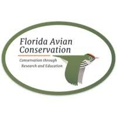
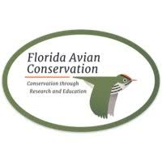
Florida is projected to experience more frequent and stronger hurricanes under future climate projections. Given these climate projections it is important to understand how wildlife are responding hurricanes now to predict how wildlife may respond under future climate scenarios. I am working on two projects for this work. (1)First, I am collaborating with the Rangeland Wildlife Ecology Lab to publish a literature review, synthesizing the current knowledge of how wildlife may respond to hurricanes and cyclones. (2) Working in collaboration with the Caladeesi Island Bird Banding Project, I am leading a team to analyze bird banding data to determine how migratory birds may respond to hurricanes. Using 6 years of data we are determining how hurricanes directly (capture rates) and indirectly (changes in vegetation) are affecting migratory bird species on Florida's gulf coast.
Collaborators: Project 1: Dr, Erin Koen (USGS), Dr. Karl Miller (Florida Fish and Wildlife Conservation Commission), Dr. Khalil Meliane, Alex Furst, Peyton Niebanck, Samantha Nunn, Kylie Pearson, Nicole Rita, Brier Ryver, Dakotah Shaffer, and Dr. E. Hance Ellington (University of Florida)
Project 2: Mia Keriazes and Preston Bertka-Ballard (Univerisy of Florida), Jim McGinity (Florida Avian Conservation).
For more information please click HERE.
Testing BirdNET
 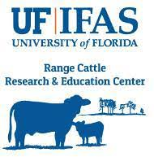
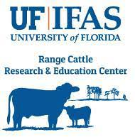

BirdNET is a deep neural network algorithm to identify bird species from audio recordings. We continue to run real world tests of BirdNET from audio recordings across the Florida Corridor, a series of public lands across the Florida peninsula that aid in conservation connectivity. Our long-term goals include: [1] to assess BirdNET's success rate of avian identification with real world data, [2] to assess changes in avian biodiversity across spatial and temporal scales, and [3] establish a long-term study design to determine changes in community composition.
Collaborators: Dr. Marcus Lashley, Dr. Khalil Meliane, Nicole Rita and Dr. E. Hance Ellington (University of Florida).
Plant, Bird, and Management Interactions on South-Central Florida Rangelands

 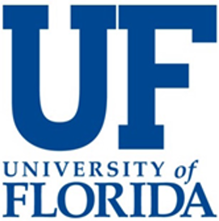
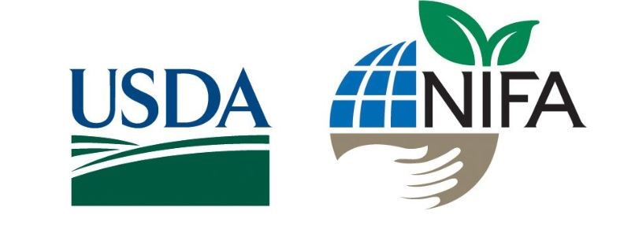
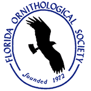
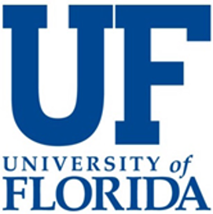
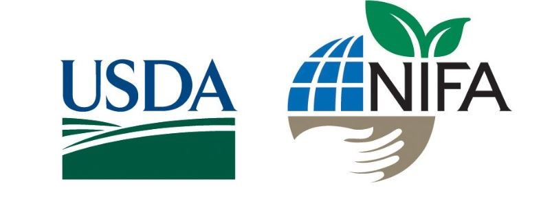
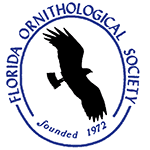
Grassland avifauna are in decline across North America. In south-central Florida many historic grassland systems have ben converted to cow-calf operations. Grassland birds have shifted to use these operations in place of historic grasslands. To what extent these rangelands serve as suitable habitat has been largely overlooked compared to other grassland systems. We continue to assess cow-calf operations in south-central Florida to understand shifts in grassland species use and success in relation to existing land and cattle management strategies. We take a holistic approach to understand shifts in vegetation and avian abundance using multiple field and quantitative based methods including vegetation sampling, avian point counts, acoustic recording, AI specific identification, and statistical analyses. Our objectives are to [1] understand the vegetative variability between pasture types within cow-calf operations, and [2] understand how the grassland bird community is responding to management actions.
Collaborators: Dr. Karl Miller (Florida Fish and Wildlife Conservation Commission), Dr. Marcus Lashley, Dr. Khalil Meliane, Nicole Rita and Dr. E. Hance Ellington (University of Florida).